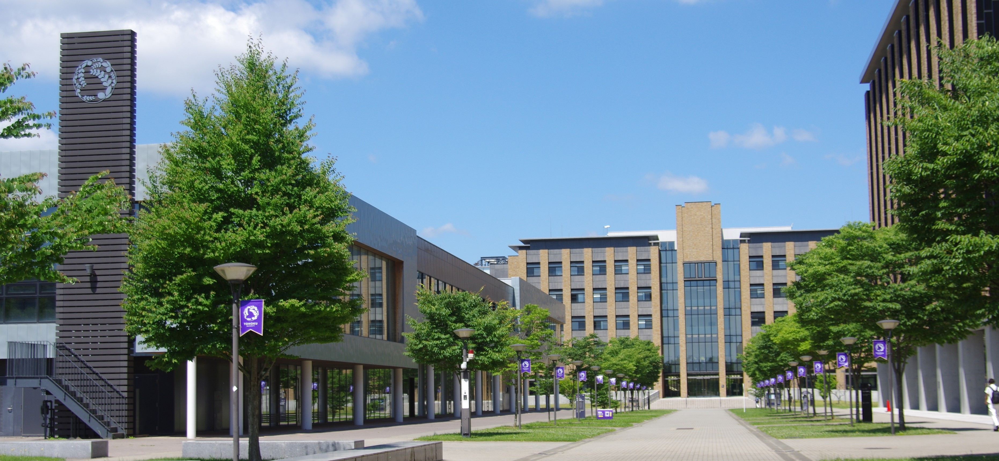
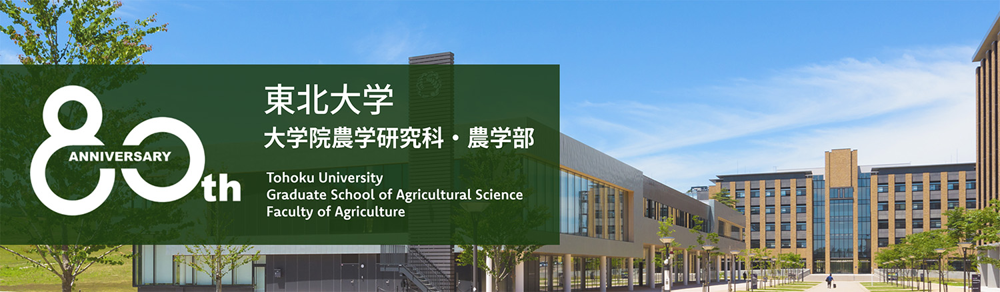
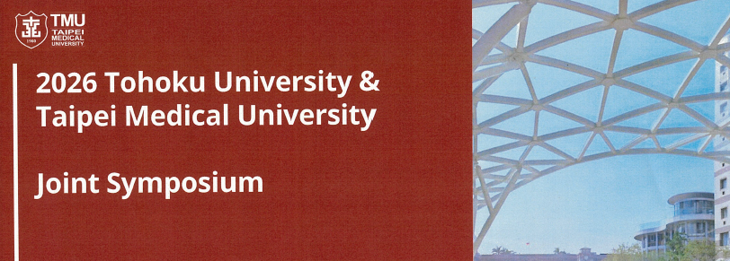
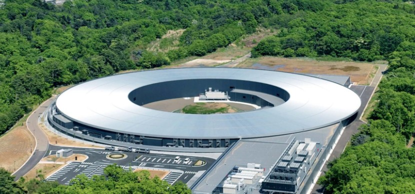
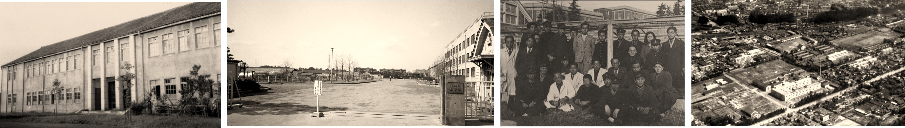
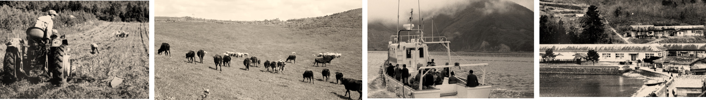

80周年記念事業 メインイベント
80周年記念事業 ／
メインイベント。
2027年10月10日（日）
東北大学農学部80周年のメインイベントを開催します。



東北大学 片平キャンパス

室町三井ホール＆カンファレンス（東京）
場所：後日お知らせ
青葉山キャンパス
80周年記念事業 ／
2027年10月10日（日）
東北大学農学部80周年のメインイベントを開催します。


| 創設期 |
1907（明治40）年6月 東北帝国大学創立
|
|---|---|
| 雨宮時代 (1947-2016) |
1947（昭和22）年4月 農学部（3学科7講座）設置
|
| 青葉山時代 (2017-) |
2017（平成29）年4月 青葉山新キャンパスへ移転
|
